Design Concept
매핑 중심에서 흐름도 중심으로
기존에는 매핑 정보를 검토하는 화면이었지만, 매핑을 시스템이 자동으로 채워주면서 검토가 불필요해졌어요.
오히려 시스템이 자동으로 채워준 정보를 잘 탐색할 수 있게 하는게 중요해졌어요.
AS-IS
TO-BE

공정거래 어드민이란?
검토 목록 화면
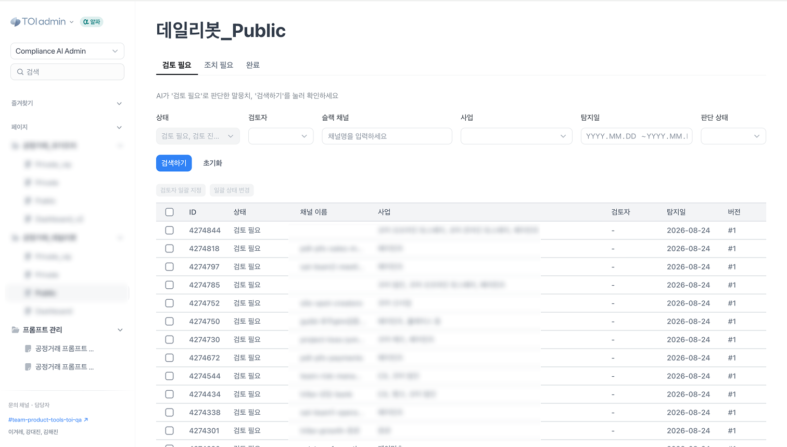
검토 상세 화면
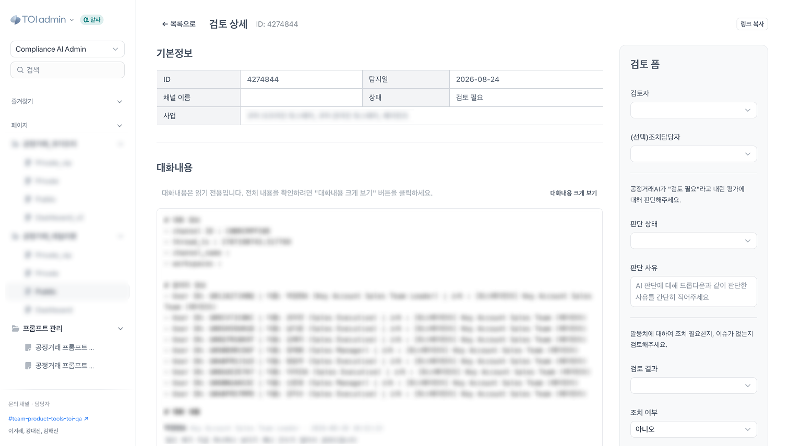
Problem
AI가 하루에 탐지하는 건수는 500건 내외예요.
Hypothesis
Solution
비슷한 맥락의 이슈끼리 묶었어요.
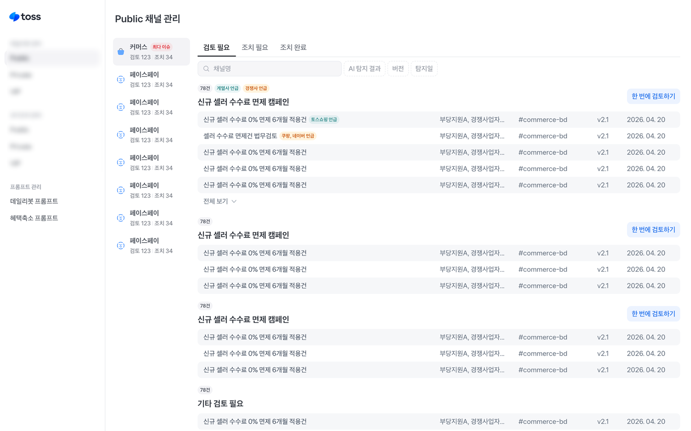
같은 맥락으로 묶인 이슈는 검토폼을 한 번에 제출할 수 있게 했어요.
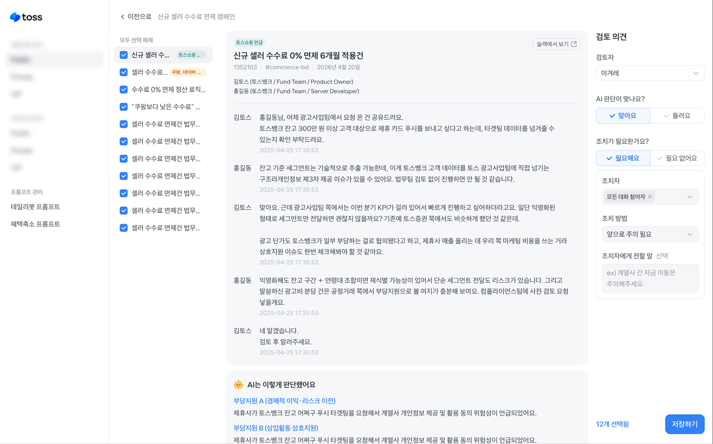
Usability Test
STEP1) 개별 검토라 생각하고 검토폼 제출
(왼쪽 체크박스가 모두 선택되어 있는 것을 인지하지 못함)
STEP2) 모달을 보고 일괄 검토임을 인지
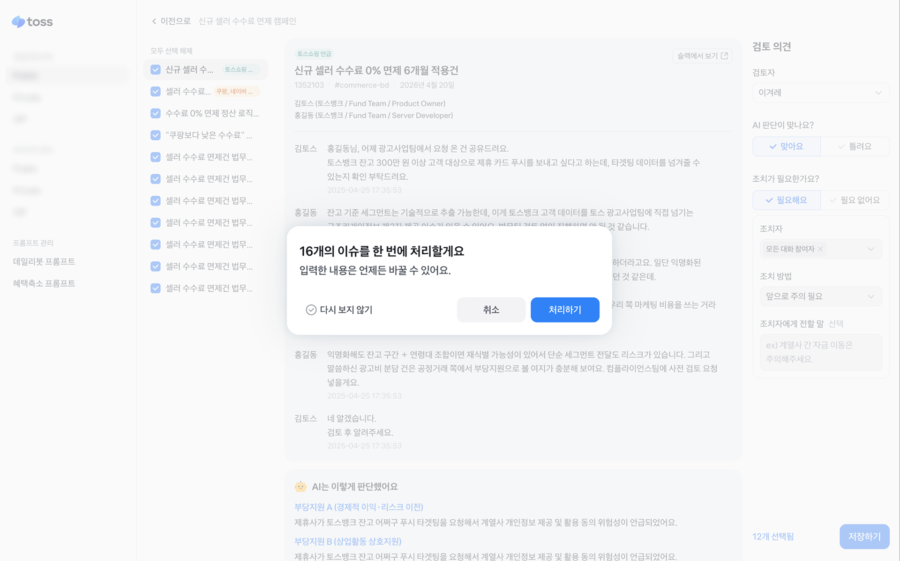
STEP3) 모달을 닫고 체크박스를 풀어 다시 검토폼 제출
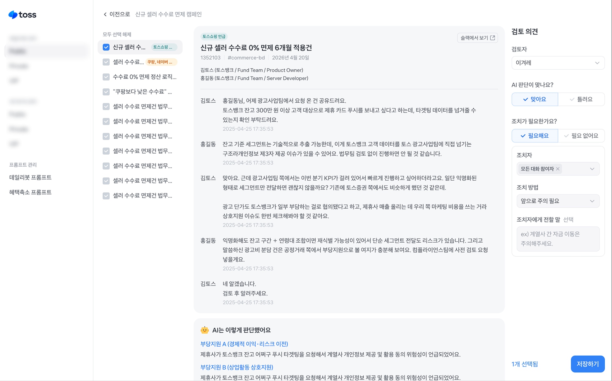
유저의 검토 행태
유저인터뷰 내용
Solution
Solution
Solution 1
하나씩 검토하고 목록으로 되돌아가는 과정을 반복해야 했어요.
같은 맥락으로 묶인 이슈들을 한 화면에서 검토할 수 있게 했어요.
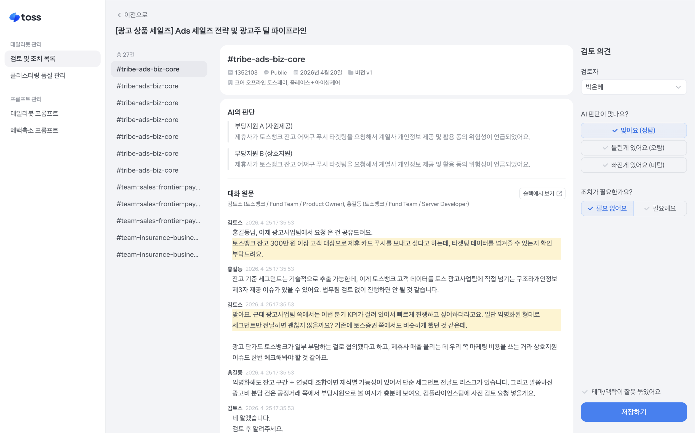
Solution 2
대화 본문이 길어 내용을 파악하는 데 오래 걸려요.
AI 판단의 증거가 되는 문장들을 하이라이트해서 내용을 빠르게 파악하게 했어요.
Solution 3
검토할 때마다 dropdown을 눌러 선택해야 하고, 주관식 답변이 많아 검토폼 입력이 오래 걸렸어요.
선택지를 checkbox로 바꾸고, 주관식 답변들을 유형화하여 빠르게 선택할 수 있게 했어요.
Result
Lessons Learned
Background
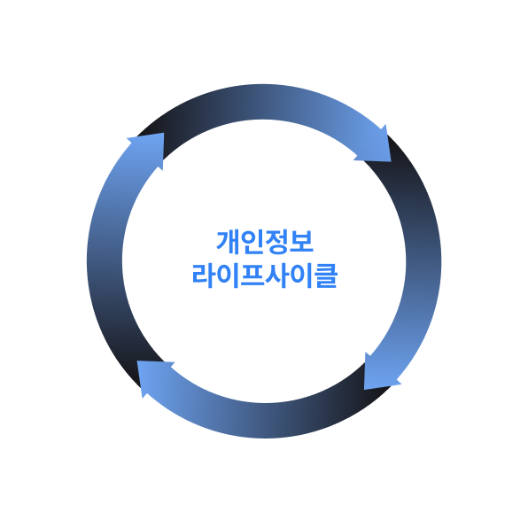
서비스 변경으로 계약 업체에 연락처를 제공하지 않게 되는 경우
API 메타 관리 화면이란?
API의 메타 정보에는 Payload 정보, Payload와 연결된 테이블과 컬럼 정보 등이 있어요.
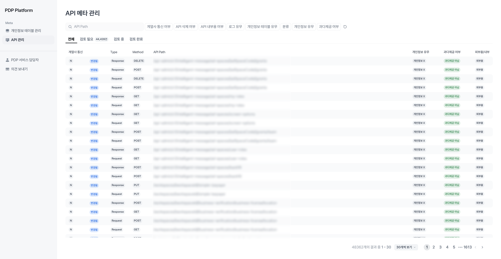
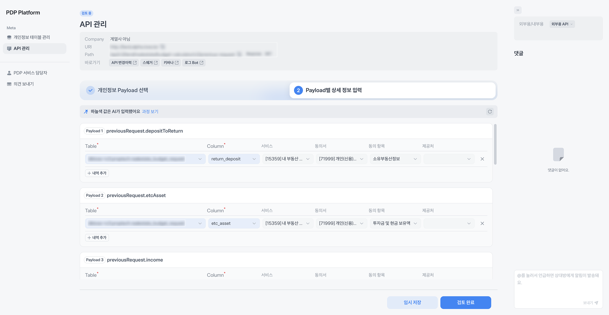
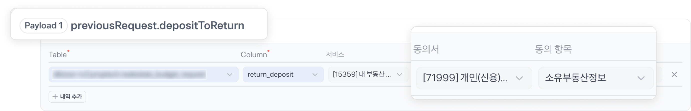
Problem
개인정보는 API를 통해 서버와 서버를 오가며, 여러 API를 거쳐 외부에 전달될 수 있어요.
과다제공을 판단하려면 개인정보를 외부로 보내는 API를 알아야 해요.
하지만, 기존 화면에서는 개인정보 DB를 호출하는 API만 보여주고 있었어요.
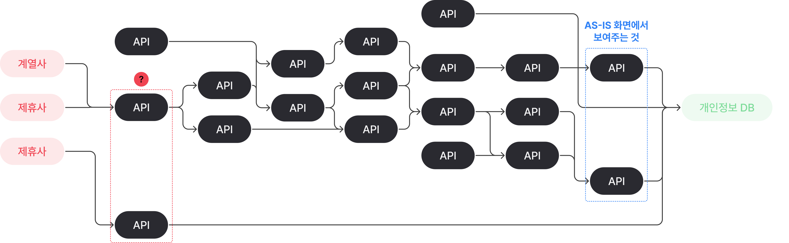
Project Goal
Design Concept
기존에는 매핑 정보를 검토하는 화면이었지만, 매핑을 시스템이 자동으로 채워주면서 검토가 불필요해졌어요.
오히려 시스템이 자동으로 채워준 정보를 잘 탐색할 수 있게 하는게 중요해졌어요.
Problem 1
API 간 호출 관계는 매우 복잡해요. 하나의 관계 안에도 여러 API가 얽혀 있을 수 있어서,
전부 보여주면 오히려 아무것도 파악할 수 없어요.
하나의 개인정보 DB에서 '이름'이라는 개인정보가 나갈 경우
화살표는 API 호출 방향을 의미해요. 화살표 왼쪽이 호출 주체예요.
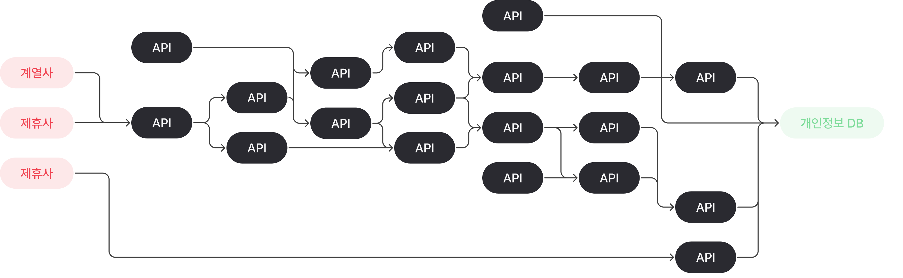
Solution 1
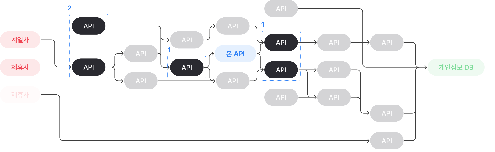


Problem 2
아래의 두가지 니즈를 동시에 충족하려면, API Payload 정보와 개인정보를 모두 보여주는 뷰가 필요했어요.
Solution 2
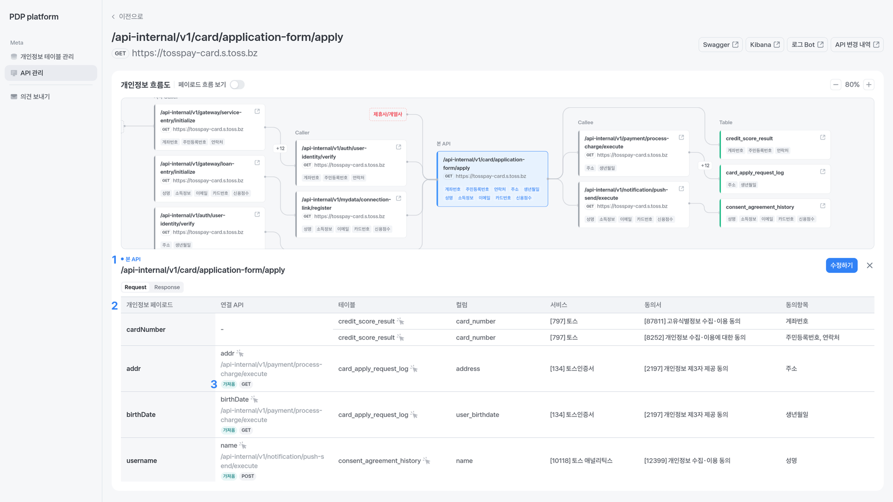
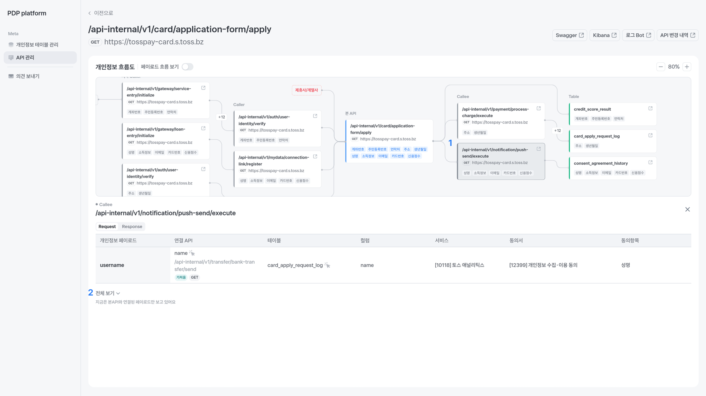
뱃지를 클릭하면 해당 항목의 흐름을 볼 수 있어요.

페이로드 흐름 보기 토글을 키면 페이로드의 호출 흐름을 볼 수 있어요.
개인정보항목은 이름이 같으면 하나로 합쳐져 보이지만, 페이로드는 고유한 값이기 때문에 개인정보 흐름을 더 명확하게 볼 수 있어요.
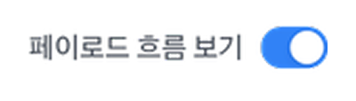

Problem 3
개인정보를 다루는 API는 수천 개에 달하는데, 이를 모두 볼 필요는 없어요.
Privacy Manager가 우선적으로 봐야 할 API만 골라낼 수 있어야 해요.
Solution 3

Result
이번 개선은 전체적인 호출 흐름을 보는 기반을 마련한 작업으로, 과다 제공 판단을 위한 첫 단계였어요.
Lessons learned
Background
Background
Background
| 1세대 구직 플랫폼 | 토스알바 |
|---|---|
| 광고 기반 잡보드광고성 공고가 너무 많다 30% 추천이 내 상황과 맞지 않는다 30% 이미 마감된 공고가 많다 24% 중복으로 올라오는 공고가 많다 17% |
알바 매칭 서비스광고 없이 내게 맞는 알바를 1분만에 찾는다 |
알바 매칭 서비스?


Problem
Problem


Hypothesis
| 요소 | 가중치 | 설명 |
|---|---|---|
| 거리 적합도 | 40% | 집주소/희망근무지와 매장 간 거리 |
| 경력 적합도 | 10% | 관련 업종 경력 보유 및 기간 |
| 업종 일치도 | 25% | 희망업직종과 공고업직종 매칭 |
| 근무조건 적합도 | 25% | 기간/요일/시간 매칭 |
| 총점 | 100% | 최종 100점 만점 |
User Study
설문조사에서도 미지원에 대한 이유를 '원하는 공고가 없어서'로 뽑았어요.
Solution
업종의 가중치를 늘려 업종이 맞는 알바를 잘 보여주면 공고 클릭률이 오를 것이다.
(UT에서 유저들이 업종을 가장 많이 언급했어요)
V1: 필터로 좋은 조건의 공고를 쉽게 비교하게 만들면 공고 클릭률이 오를 것이다.
V2: 업종과 매장명을 강조한다면 공고 클릭률이 오를 것이다.


내가 고른 조건만 모아볼 수 있는 필터를 추가하면 공고 클릭률이 오를 것이다.


Result


User Study
단기 알바 지원 비중이 높고, 타사처럼 필터형 탐색 UI가 없었기 때문으로 추정돼요.
1분 안에 지원
49%
첫 지원 전 클릭하는 공고 3개 이하
65%

Problem

.png)
Solution
V1: 아이콘과 문구로 일치를 강조한다면 지원 완료율이 오를 것이다.
V2: 업종과 거리의 위계를 재설정해 일치 개수가 많아 보이게 한다면 지원 완료율이 오를 것이다.


V2 지원 완료율
+32.7%
| 측정 구간 | CON | V1 | V2  |
|---|---|---|---|
| 공고 상세→지원 완료 | 5.7% | 6.5% (+14.4%) | 7.5% (+32.7%) |
Result

Solution
V1: 일치 항목을 강조하면 공고 클릭률이 오를 것이다.
V2: 공고 하나만 강조하면 공고 클릭률이 오를 것이다.

V2 지원 완료율
+53.4%
| 측정 구간 | CON | V1 | V2 |
|---|---|---|---|
| 결과 화면→지원 완료 | 2.4% | 3.0% (+31.2%) | 3.6% (+53.4%) |
| 결과 화면→공고 상세 | 47.3% | 47.2% (-0.07%) | 41.1% (-13.2%) |
| 공고 상세→지원 클릭 | 8.8% | 10.3% (+17%) | 13.4% (+52%) |
Result
처음에 목표했던 공고 클릭률은 떨어졌지만, 지원 완료율은 크게 올랐어요.
추천의 근거를 명확히 할수록, 하나의 공고를 강조할수록 공고 상세에서 지원 의향을 높였어요.
Lessons learned
Background


Problem

User Study


Hypothesis
유저들이 기대하는 화면을 먼저 보여주고 과업 난이도가 높은 근무지 선택을 뒤로 뺐어요.
Result
첫 화면 전환율은 올랐지만 업종 선택 완료율이 94%→82%로 떨어졌어요.
| 실험안 | 1단계 | 2단계 | 5단계 | 조건 선택 완료율 |
|---|---|---|---|---|
| CON | 근무지52.1% | 업직종94.0% | ~~ | 43.0% |
| VAR | 업직종82.4% | ~~ | 근무지56.6% | 40.7% (-5.3%) |


| 세그먼트 | 근무지 선택 완료율 |
|---|---|
| 집주소O 서울시O (비중 약 40%) | 87.7% |
| 집주소O 서울시X (비중 약 30%) | 23.3% |
| 집주소X (비중 약 30%) | 49.1% |
집주소O 서울시O 케이스
집주소O 서울시O 케이스
쓰이지 않는 화면을 아예 없애보기로 했어요.


Result
근무지가 첫 화면일 때는 다음 버튼만 누르면 됐는데, 업종이 첫 화면일 때는 선택지가 늘어나 인지 부하가 커졌어요.
| 실험안 | 1단계 | 2단계 | 조건 선택 완료율 |
|---|---|---|---|
| CON | 근무지88.9% | 업직종87.5% | 61.8% |
| VAR | 업직종77.0% | ~~ | 58.0% (-6.1%) |
집주소O 서울시X / 집주소X 케이스
이탈률 약 87%
이탈률 약 51%
집주소O 서울시X / 집주소X 케이스


VAR2 조건 선택 완료율
+139%
| 측정 구간 | CON | VAR1 | VAR2 |
|---|---|---|---|
| 근무지 선택 완료율 | 12.8% | 26.8% (+109.3%) | 35.7% (+179.4%) |
| 근무지 선택 완료 to 조건 선택 완료 | 90.2% | 83.6% (-7.2%) | 77.1% (-14.5%) |
| 조건 선택 완료율 | 11.5% | 22.4% (+94.1%) | 27.6% (+139.0%) |
Result
Lessons learned